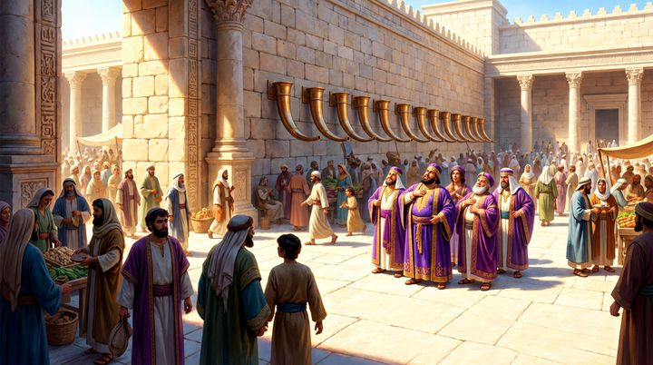
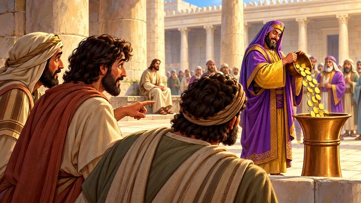
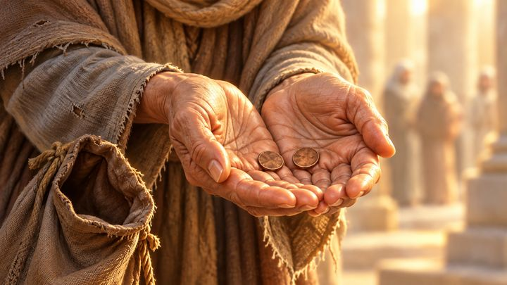
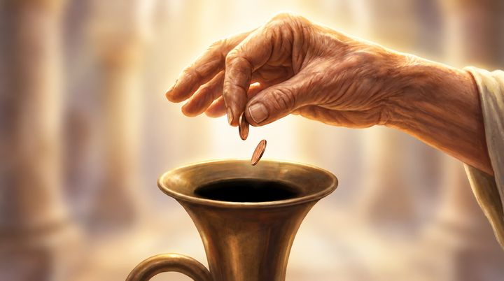
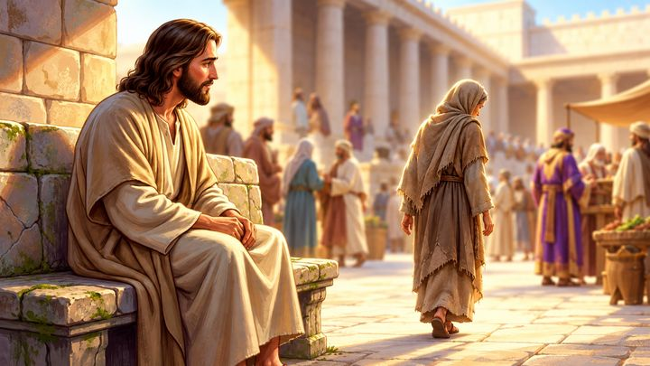
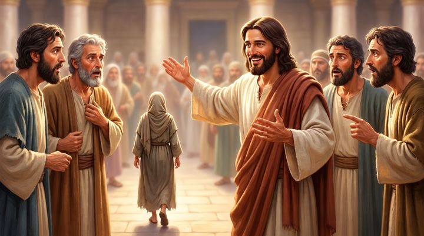
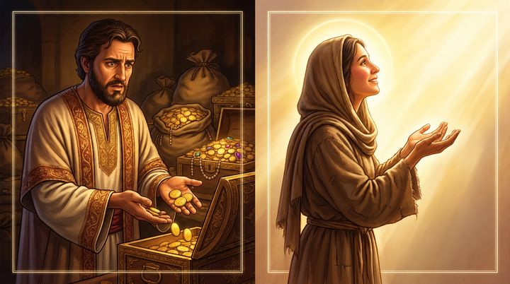
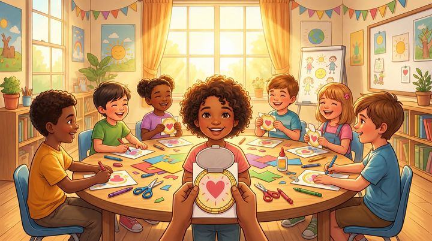
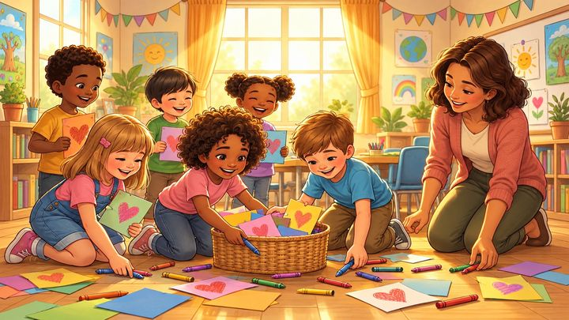

← Hope Kids 台中分部
核心問題
這四節經文在講什麼
上帝不是看人給了「多少數字」，而是看人「留下了多少」，以及背後是否將生命的「主權」完全移交給神。11 月課程範例〈寡婦的小錢：真心與主權〉神學定位
上週（第一課）孩子學到：萬物都從神而來，奉獻不是損失，是感謝。這週往深一層走：同樣是奉獻，耶穌怎麼「算」？財主投了很多，寡婦只投了兩個最小的銅板，耶穌卻說她投得最多——因為別人是從「有餘」裡拿，她是把「一切養生的」都交出去。
課程範例給的方向是：破除「數量至上」與「外在表演」的文化。即使年紀小、能力小，只要出於愛耶穌的真心，在神眼中都是寶貴的；奉獻的本質是全心信靠，把安全感從金錢轉到神的信實上。
神的屬性與人的回應
取自課程範例一、四、五
神看內心撒上 16:7；可 12:43屬性
人看金額和聲音，神看留下多少、背後是什麼心。
神看見隱密的人可 12:41-43屬性
全場沒有人注意的寡婦，耶穌從頭看到尾，還特地把門徒叫過來看她。
耶和華以勒申 14；可 12:44屬性
把一切養生的交出去，是把明天交給供應她的神。安全感從錢包移到神身上。
翻轉世界的算法可 12:38-44作為
耶穌在聖殿的最後一週翻轉「誰最響誰最厲害」，同時警告侵吞寡婦家產的文士。
真心・不比較・看見課程範例應用節點回應
把心和主權交給耶穌；不和別人比金額；學耶穌的眼睛，看見安靜付出的人。
這一課的 15 張圖，前半段是聲音（金幣噹啷響 vs. 兩個小錢沒有聲音），後半段是手：財主的手還握著錢，寡婦的手是打開的，最後一張是耶穌張開的手。講故事時可以請孩子「聽聲音」和「看手」。
課程指標
知識
知道耶穌坐在奉獻箱對面，看見一位窮寡婦投了兩個小錢，那是她一切養生的。
知道耶穌說她投的比眾人都多，因為別人是有餘，她是不足。
記得上週：奉獻的東西要照顧孤兒寡婦——今天的寡婦本來是被照顧的人。
態度
不用跟別人比金額，我的一點點耶穌也看重。
沒有人看見的時候，耶穌看見。
沒有零用錢也可以奉獻：時間、笑容、幫忙的手。
反思
神看的不是金額有多少，而是心裡愛神有多深。
握著的手說「這是我的」，打開的手說「耶穌，交給祢」。
我是在看誰比較大聲，還是像耶穌一樣看見安靜的人？
故事四篇章
取自課程範例三
篇章一 · 響亮｜可 12:41｜#01-04
聖殿熱鬧的角落：
響亮的金幣
- 財主的金幣投進銅製奉獻箱，噹啷噹啷，大家都在看。
- 亮光：世界用外在的動靜和數字大小衡量一個人。
- 道具：金屬罐＋一把硬幣，用力搖。
篇章二 · 安靜｜可 12:42｜#05-08
人群中的微小身影：
兩個小錢
- 寡婦把掌心僅有的兩個小錢放進去，沒有聲音，沒有人注意。
- 亮光：這是她全部的財產，她沒有給自己留退路。
- 道具：兩枚最小的銅板或兩文錢圖卡。
篇章三 · 看見｜可 12:43-44｜#09-12
耶穌的眼目：
比眾人更多
- 耶穌叫門徒來：「這窮寡婦投入庫裡的，比眾人所投的更多。」
- 亮光：神算的不是給了多少，是留下多少、是不是真心。
- 道具：兩個透明盒子，一盒拿 10 顆剩 90 顆，一盒拿 2 顆剩 0 顆。
篇章四 · 交託｜可 12:44 → 生活｜#13-15
真心與主權：
把手打開
- 她不知道明天吃什麼，但她把明天交給神。
- 亮光：奉獻是主權的移交——不再緊握說「這是我的」。
- 動作：全班雙手張開、手心向上，跟耶穌說「交給祢」。
關聯經文
和合本 · 上課前請對照手邊譯本
耶穌對銀庫坐著，看眾人怎樣投錢入庫。有好些財主往裡投了若干的錢。有一個窮寡婦來，往裡投了兩個小錢，就是一個大錢。馬可福音 12:41-42
我實在告訴你們，這窮寡婦投入庫裡的，比眾人所投的更多。因為，他們都是自己有餘，拿出來投在裡頭；但這寡婦是自己不足，把她一切養生的都投上了。馬可福音 12:43-44 · 課程範例主題經文
他們侵吞寡婦的家產，假意作很長的禱告。這些人要受更重的刑罰！馬可福音 12:40 · 緊接在故事前面
……並孤兒寡婦，都可以來，吃得飽足。申命記 14:29 · 上週故事
耶和華不像人看人：人是看外貌；耶和華是看內心。撒母耳記上 16:7
各人要隨本心所酌定的，不要作難，不要勉強，因為捐得樂意的人是神所喜愛的。哥林多後書 9:7 · 課程範例神學界線
教學界線
課程範例七＋兩條補充
不要這樣講「要像寡婦一樣，把錢全部捐出來，才是真的愛神。」
正確方向耶穌不是在設立一條財務規定，而是讚賞寡婦對神沒有保留的信靠。課程範例明列：不可強迫給出最後一口飯。奉獻是甘心樂意（林後 9:7）。
正確方向聖經沒有說寡婦後來變有錢。奉獻是感謝與信靠，不是用錢跟神交換祝福（第一課課程範例界線）。故事結尾請不要替她編一個好結局。
正確方向班上可能有孩子家裡經濟較緊、或沒有零用錢。神看的不是金額，是心。時間、笑容、幫忙的手、關心同學，在神眼中一樣寶貴（課程範例牧養提醒）。
正確方向經文只說「有好些財主往裡投了若干的錢」。耶穌比較的是「留下多少」，不是在罵他們。我們看不見別人的心，不要讓孩子拿這個故事去評斷誰捐得多、誰捐得少。（補充）
重點剖析
給老師的背景
前後文是一把鑰匙。故事前一段（12:38-40），耶穌剛警告文士「侵吞寡婦的家產」；故事後一段（13:1-2），耶穌說這座聖殿要被拆毀。課程範例兩面都提到：讚賞寡婦無保留的信靠，也譴責宗教領袖剝削窮人。對大班孩子，台詞只用上週的申命記 14:29 帶一句「她本來應該是被照顧的人」（#05），不展開對文士的批判；但老師心裡要知道，這段經文不是在鼓勵窮人把最後的錢交出去。
「兩個」是重點。經文刻意寫「兩個小錢」——她大可以留一個，她沒有。#07 的提問就是這一點。小錢（lepton）是當時最小的銅幣，馬可特別向羅馬讀者註明「就是一個大錢」。對照馬太 10:29「兩個麻雀不是賣一分銀子嗎」，一分銀子等於八個小錢，所以兩個小錢大約是半隻麻雀的價錢——課程範例說「連買半隻麻雀都不夠」就是這樣來的。
整個故事是從耶穌的眼睛看出去的。12:41 說耶穌「看眾人怎樣投錢」，不是看投了多少。台詞一路跟著祂的眼睛：#02 祂坐下來看、#09 只有祂看見、#10 祂把門徒叫來一起看。最後 #14 把這雙眼睛交給孩子：你也可以看見安靜的人。
噹啷聲是故事畫面，不是經文。十三個號角形奉獻箱出自猶太口傳文獻（米示拿〈舍客勒篇〉）；金幣很響、大家轉頭看，是課程範例的故事畫面，馬可只寫「有好些財主往裡投了若干的錢」。所以台詞讓「旁邊的人」驚呼，不說財主在炫耀。
「主權」怎麼跟孩子講。課程範例用「主權移交」，大班孩子聽得懂的說法是「交給耶穌管」。#15 用張開雙手表達：握著的手是「這是我的」，打開的手是「耶穌，交給祢」。這個動作也接回上週：亞設的爸爸捧出第一籃小麥。
系列的位置。FORWARD 奉獻四課：十一奉獻（11/8）→ 寡婦的小錢（11/15）→ 五餅二魚（11/22）→ 全人活祭（11/29）。課程範例的 take-away 下半句「微小擺上成就無限祝福」，其實是下週五餅二魚的主題；今天不用強調「會得到祝福」，停在「耶穌看見、耶穌記得」就好，下週會接上「把僅有的交給耶穌」。
課程流程
20:00 總長
| 起 | 長度 | 單元 | 內容 |
|---|
| 00:00 | 1'00" | 前情提要
#00 · 申 14 |
- 放上週的故事圖〈分出十分之一〉，問：「十籃裡面，哪一籃先拿出來？拿去哪裡？」
- 帶出兩件事：奉獻是感謝，不是損失；獻上的東西要照顧孤兒寡婦（第二件在 #05 回收）。
- 接到今天：亞設家有十籃，拿出一籃；今天這個人只有兩個銅板。台詞見分鏡 #00。
|
| 01:00 | 10'00" | 經文故事
15 幀分鏡 |
- 依序播放 15 張故事圖，台詞見下方，每幀標了時間預算與所屬篇章。
- 四個必停的互動點：#07（她可以留一個）、#10（誰投得最多）、#12（糖果盒）、#14（安靜付出的人）。
- 三個道具：#03 金屬罐搖硬幣、#07 兩個小銅板、#12 兩個透明盒子＋糖果。
- 來不及時砍 #04、#11（共省 65 秒）。#07、#12、#15 不能砍。
|
| 11:00 | 9'00" | 手作與禱告
課程範例六 |
- 🪙〈窮寡婦的兩文錢〉信心金幣吊飾：剪下錢幣卡紙、在孔洞處打洞 → 塗色 → 黏貼處上膠水 → 穿上金色緞帶，可以掛在脖子上或書包上。
- 銜接：故事 #13 已經預告「等一下我們也要做一個」，#15 用張開雙手的動作收尾。
- 建議：做的時候請孩子在金幣背面寫一件「我的兩個小錢」——時間、笑容、幫忙收拾……（補充，非課程範例）
- 課程結束禱告（課程範例）：「親愛的主耶穌，謝謝祢沒有用世俗的金額大小來衡量我們，而是溫柔地看著我們的真心。主啊，我知道我年紀還小，能給的看似微不足道，但我願學習那位寡婦，把我的心、我的時間、我的壓歲錢和我的生命主權，全部交在祢愛的手中。求祢親自成為我生命的依靠與供應者。奉主耶穌的名求，阿們！」
- 本週任務（應用節點 3）：對一位默默幫忙的同學說「謝謝你默默幫大家做事」。
|
| 20:00 | — | 教材：金屬罐與一把硬幣、兩枚最小的銅板（或兩文錢圖卡）、透明盒子兩個與糖果、錢幣卡紙、金色緞帶、打孔器、膠水、彩色筆 |
分鏡台詞
15 幀 · 10:00
000:50前情提要申 14
上禮拜，第一籃
先看這張圖，還記得嗎？（讓孩子喊）上禮拜，小亞設家收成了十籃小麥。
★ 快問快答：十籃裡面，爸爸先把哪一籃拿出來？拿去哪裡？
（等一兩個回答）最好的第一籃，獻給神。亞設問：「少了一籃，不就變少了嗎？」爸爸說，這十籃全都是神給的。奉獻不是損失，是感謝。
獻上去的小麥後來拿去給誰吃？給在聖殿服事的利未人，還有孤兒、寡婦、遠方來的客人。
今天的故事，主角就是一位寡婦。亞設家有十籃，拿出一籃；今天這個人，全身上下只有兩個小銅板。你猜，她會拿出幾個？
申命記 14:22-23, 28-29（上週故事）

010:40響亮
聖殿好熱鬧
這裡是耶路撒冷的聖殿，人山人海。你看牆上那一整排，像什麼？（喇叭、號角）那是奉獻箱，開口窄窄的，下面像喇叭一樣。大家走過去，就把錢投進去。
你看中間那幾個穿紫色袍子的人。紫色的布在那時候非常貴，一看就知道他們很有錢。
這是耶穌在地上的最後一個禮拜。再過幾天，祂就要上十字架了。可是今天，祂特別在這裡停下來。
馬可福音 12:41；課程範例〈聖殿女院與號角奉獻箱〉
020:35響亮
耶穌坐在對面
耶穌找了一個位子坐下來，就坐在奉獻箱的對面。
聖經說，耶穌坐著，「看眾人怎樣投錢」。注意喔，不是看大家投了「多少」，是看大家「怎樣」投。
今天大家都在看奉獻箱。只有一個人，在看投錢的人。
馬可福音 12:41
030:45響亮道具
噹啷！噹啷！
道具拿出金屬罐和一把硬幣，用力搖、倒進罐子裡。
一個有錢人走過來，捧著一大罐錢，整罐倒進去——噹啷！噹啷！噹啷！奉獻箱是銅做的，錢越多，聲音越大。
你看旁邊的人，嘴巴張好大：「哇！他獻了好多！」
大家聽，這個聲音好響亮對不對？如果你站在旁邊，會不會也覺得這個人好厲害？（讓孩子舉手）
人很容易用聲音的大小、錢的多少，決定誰比較厲害。
教學界線經文只說「有好些財主往裡投了若干的錢」，沒有說他們在炫耀。驚呼的是「旁邊的人」，不要替有錢人加上壞心眼。
馬可福音 12:41

040:30可略響亮
門徒也看呆了
耶穌的門徒也在旁邊。你看那個人的手指——「你看你看，又一個！那個人好有錢！」
門徒跟大家一樣，眼睛跟著最響、最亮的地方跑。
你找得到後面的耶穌嗎？祂還坐在那裡，還在看。
馬可福音 12:41
050:35安靜接上週
一個沒人注意的人
熱鬧的人群裡，走進來一個很不一樣的人。你找得到她嗎？（讓孩子指）
她的衣服又舊又破，身邊沒有家人。她是一個寡婦，丈夫已經過世了。
還記得上禮拜嗎？神說，獻上去的東西要拿去照顧誰？（孤兒、寡婦）對。她本來應該是被照顧的那個人。
她低著頭，雙手握在胸前，從那些穿紫袍的人旁邊走過去。沒有人轉頭看她。
馬可福音 12:42；申命記 14:29
060:30安靜
她走到奉獻箱前
她走到奉獻箱前面，停了一下。
剛剛那個人倒了一大罐，噹啷噹啷的。你想，她心裡會不會怕？「我手上這一點點……會不會被笑？」
她慢慢把手伸出去。
馬可福音 12:42

070:50★ 必停．不可略安靜全課核心道具
兩個小錢
道具老師也把手打開，掌心放兩枚最小的銅板（或兩文錢圖卡）給孩子看。
她打開手。就這樣——兩個小錢。旁邊的布袋，已經空了。
這是那時候最小的銅板，兩個加起來，大概只能買半隻麻雀，連一包餅乾都買不到。可是聖經說，這是她「一切養生的」——就是她活下去要用的全部的錢。
★ 她有兩個喔。她可以留一個，晚上買東西吃。如果是你，你會怎麼做？
（等回答，讓孩子講完。說「留一個」很正常，老師也會這樣想。）
馬可福音 12:42, 44

080:35安靜
兩個都放進去
她把兩個都放進去了，一個都沒有留。
你聽——（老師停兩、三秒，不出聲）……什麼聲音都沒有。銅板太小了，連「叮」一聲都聽不到。旁邊沒有人說「哇」，沒有人知道她做了什麼。
她今天晚上吃什麼？明天怎麼辦？聖經沒有告訴我們她心裡想什麼。可是一個把最後兩個銅板都交出去的人，她一定很相信：神會看顧我。
馬可福音 12:42, 44

090:35看見
有一個人看見了
她轉身走了，一樣沒有人注意。
可是你看這張圖——有一個人一直在看。
從頭到尾，耶穌都坐在對面。響亮的金幣祂看見了，安靜的兩個小錢祂也看見了。
沒有人看見的時候，耶穌看見了。
馬可福音 12:41-42

100:45★ 必停看見
誰投得最多？
耶穌把門徒叫過來，指著那個正要離開的寡婦。
★ 你們猜，耶穌會說今天誰投得最多？
（等回答，各種答案都可以）耶穌說：「我實在告訴你們，這個窮寡婦投進去的，比所有的人都多。」
你看門徒的臉——「蛤？怎麼可能？那些人倒了一大罐耶！她才兩個小銅板！」
馬可福音 12:43
110:35可略看見
耶穌的算法
門徒坐下來，聽耶穌解釋。耶穌的算術，跟我們在學校學的不一樣。
我們算的是：拿出來多少。耶穌算的是：留下來多少。
馬可福音 12:44

120:55★ 必停．不可略看見關鍵經文道具
有餘的，和全部的
耶穌說：「他們都是自己有餘，拿出來投在裡頭；但這寡婦是自己不足，把她一切養生的都投上了。」
道具兩個透明盒子：A 盒 100 顆糖拿出 10 顆；B 盒只有 2 顆，兩顆都拿出來。（數字可以縮小，重點是一盒剩很多、一盒剩 0。）
A 盒拿出 10 顆，還剩幾顆？（90）B 盒拿出 2 顆，還剩幾顆？（0）
★ 誰拿出來的比較多？誰把全部的心都給出來了？
（等回答）你看圖的左邊，有錢人手上拿著錢，後面還有好幾箱。右邊的寡婦，手是打開的，什麼都沒有了——可是她抬頭看著神。
神看的不是金額有多少，而是心裡愛神有多深。
教學界線有錢人不是壞人，拿出 10 顆也是真的奉獻了。耶穌是在教門徒怎樣「算」才對，不要讓孩子學會比較誰捐得多、誰捐得少。
馬可福音 12:43-44；路加福音 21:3-4

130:30交託接手作
我的兩個小錢是什麼？
那我們呢？我們年紀小，零用錢不多，有的人沒有零用錢。那怎麼辦？
神要的不是錢的數字，是你的心。你的時間、你的笑容、你幫忙收拾的手、你願意分享的東西，都可以是你的「兩個小錢」。
等一下，我們也要做一個「兩個小錢」的金幣吊飾。
課程範例：牧養提醒、手作〈信心金幣吊飾〉

140:45★ 必停交託
像耶穌一樣看見
今天故事裡，大家都在看最響的那個人，只有耶穌看見最安靜的那個人。
★ 在學校或教會，有沒有誰總是默默幫忙、很安靜，很少人誇獎他？（不用說名字也可以）
（等回答）這個禮拜，你可以學耶穌的眼睛：走過去跟他說一句「謝謝你默默幫大家做事」。
耶穌看見安靜的人，我也可以。
課程範例應用節點 3
150:55交託禱告收尾
把手打開
那個寡婦後來怎麼樣了？聖經沒有說。沒有說她變有錢，也沒有說她以後每天都有飯吃。可是兩千年後，我們還在講她的故事——耶穌記得她。
你看這張圖，耶穌的手是打開的。奉獻不只是放錢，是把我們的手也打開，跟耶穌說：「我的東西、我的心，都交給祢管。」
（請孩子一起把雙手打開，手心向上）我們一句一句跟耶穌說：「耶穌，我能給的很少，但我把我的心交給祢。祢看見我，我相信祢。阿們。」
神看的不是金額有多少，而是心裡愛神有多深。等一下，我們就來做兩個小錢的金幣吊飾。
馬可福音 12:44；撒母耳記上 16:7
給孩子的話
依課程範例 take-away 與應用節點
神看的不是金額有多少，而是心裡愛神有多深；把心和主權交給耶穌，微小擺上成就無限祝福！課程範例 · 課後 Take-away
給大班老師的引導建議
含教材的教學界線
01第 07 幀是全課的核心。問「她可以留一個，如果是你會怎麼做」之後要真的等。很多孩子會說「留一個」，請不要糾正——那是誠實的答案，老師也會這樣想。答案在 #08 揭曉，對比才會出來。
02第 08 幀的安靜要做出來。講到兩個銅板放進去時，停兩、三秒不出聲。和 #03 的噹啷聲放在一起，比任何解釋都清楚。
03第 12 幀不能砍，它帶著主題經文和糖果盒。100 顆糖太多的話，可以改成 20 顆拿 2 顆對 2 顆拿 2 顆。重點是一盒剩很多、一盒剩 0。
04「要把錢全部捐出來嗎？」孩子可能這樣問。可以回答：「耶穌沒有這樣規定，祂在乎的是你的心。要奉獻多少，可以跟爸爸媽媽一起決定。」這是課程範例的第一條界線（不可強迫給出最後一口飯），也呼應林後 9:7 的甘心樂意。
05不要替寡婦編結局（第 15 幀）。孩子會問「她後來有沒有餓肚子」「神有沒有給她很多錢」。照實說：聖經沒有說。我們知道的是耶穌看見她、記得她。說「後來神讓她變有錢」就變成用錢跟神交換，是第一課課程範例的界線。高年級可以多帶一句：所以教會要照顧有需要的人，就像上週說的。
06班上可能有沒有零用錢的孩子（第 13 幀）。台詞特別加了「有的人沒有零用錢」。不要現場問孩子奉獻多少、不要比較，讓每個孩子都知道：時間、笑容、幫忙的手也是奉獻。
07有錢人不是壞人（第 03、12 幀）。孩子很容易說「有錢人很壞」。可以回：「他們也真的奉獻了。耶穌不是在罵他們，是在教門徒怎樣算才對。」也不要讓這個故事變成評斷同學捐多捐少的工具。
08第 14 幀不要點名。問「有沒有誰默默幫忙」時先說「不用講名字也可以」，避免變成在全班面前指出誰被忽略。
09道具清單：金屬罐＋一把硬幣（#03）、兩枚最小的銅板或兩文錢圖卡（#07）、兩個透明盒子＋糖果（#12）。三樣都取自課程範例的教師口語引導。
10第 15 幀的禱告要先跟帶手作的老師對好。如果故事老師帶：用張開雙手跟唸那一句，再接手作。如果手作與禱告由另一位老師帶：把跟唸禱告改成一句預告「等一下我們來做兩個小錢的金幣吊飾」，課程範例的完整禱告文留給手作結束時用。
11前情提要只抓兩件事。上週的「奉獻是感謝」和「獻上的東西要照顧孤兒寡婦」，第二件在 #05 回收。上週 take-away 的後半句「神必敞開天窗大大祝福我們」今天不提，避免孩子把今天聽成「投兩個，神會還你更多」。
12時間快超過時的取捨順序：先砍第 04、11 幀（共省 65 秒）。不要砍第 07、12 幀（核心與主題經文），也不要砍第 15 幀（張開手的收尾）。
13哪些是範例、哪些是另外編的。四篇章、主題經文、三個道具、應用節點、take-away、教學界線、手作與禱告文取自 11 月課程範例。標題《兩個小錢》、「響亮 → 安靜 → 看見 → 交託」四個詞、#00 用 11/8 的故事圖、#05 接申命記 14:29、#07「她可以留一個」的提問、#08 的停頓、#15 不編結局的說法、半隻麻雀的算法，是依範例方向另外編的。這次沒有拿到生活應用老師的投影片，流程表後 9 分鐘先照課程範例的手作與禱告排。